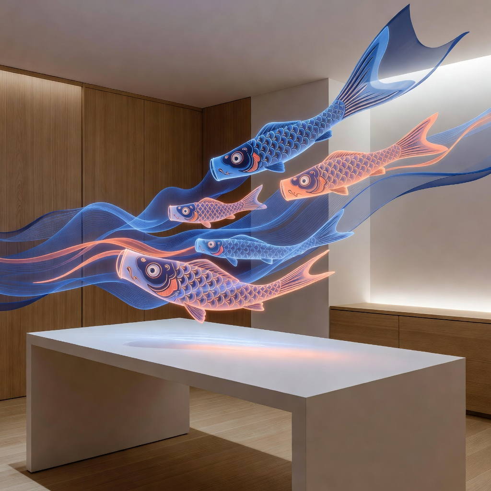

Nobori gives creative teams the clarity to see what's working, the confidence to cut what isn't, and the momentum to keep ascending.
Capabilities
Nobori transforms raw campaign data into flowing, actionable insight — so your team spends less time reporting and more time creating.
Flow Analytics
See how audiences flow through your campaigns, where they accelerate, and where they stall. Every data point rendered as a living current.
Creative Intelligence
Nobori scores every asset in your library against real performance data. Stop guessing which banner, video, or post drove results — see it clearly.
Team Pulse
Track creative output, campaign velocity, and team bandwidth in one view. Know when your team is flowing and when they need space.

"Nobori changed how our entire creative org thinks about performance. We stopped arguing about hunches and started following the current."
Start your free 14-day trial. No credit card required. Set up in under five minutes.
Free for teams up to 5. Enterprise plans available.